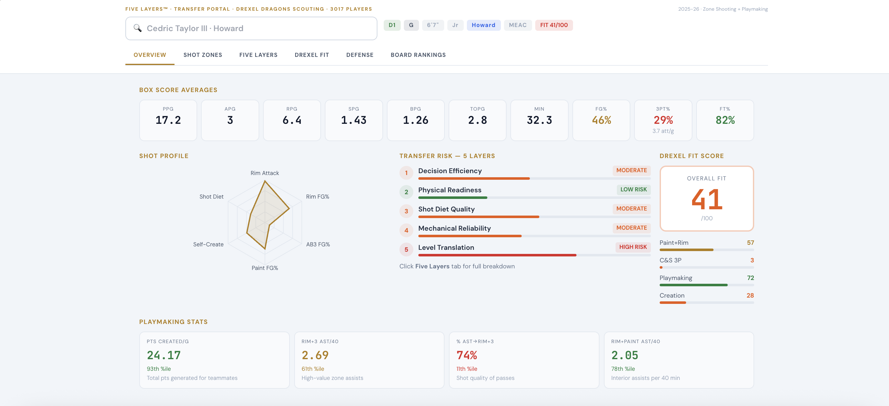
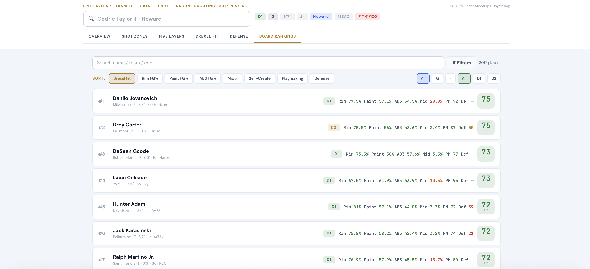

Analytics
Five Layers Portal Evaluation
This project adapts the Five Layers Diagnostic idea from Basketball AI Newsletter into a transfer portal evaluation model. I used that framework as inspiration, then rebuilt it around transfer portal scouting by importing player statistics, zone shooting data, playmaking indicators, and defensive metrics to create a more complete evaluation system.
I also added a Drexel fit score to the model so it can identify which portal players match Drexel’s preferred shot zones, playmaking styles, and defensive needs based on team tendencies and problem areas from the previous season. The result is a decision-support tool that helps surface players who fit the system while still flagging specific strengths, weaknesses, and development questions.


What It Evaluates
- Zone-based shooting performance and shot profile translation
- Playmaking style and offensive decision-making indicators
- Defensive scheme fit through portal player statistics
- Drexel-specific fit scoring tied to roster needs and team weaknesses
- AI-assisted synthesis to organize scouting insights into one model